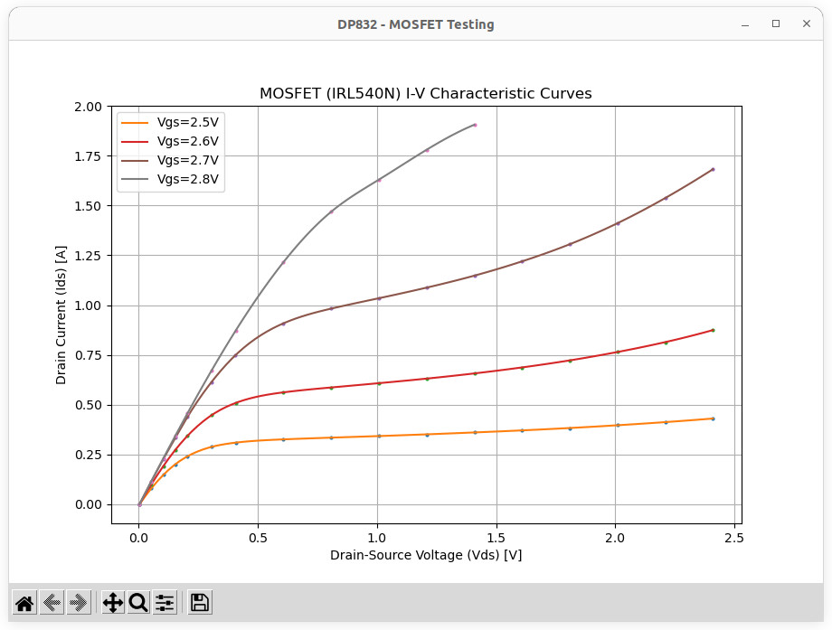

การโปรแกรม Rigol DP832 DC Supply เพื่อทดสอบทรานซิสเตอร์ MOSFET#
Keywords: Rigol DP832, Programmable DC Power Supply, Python, LXI, SCPI, MOSFET Testing, V-I Curve Tracing
▷ การทดสอบและศึกษาคุณสมบัติของมอสเฟต#
ทรานซิสเตอร์ประเภท "มอสเฟต" เป็นอุปกรณ์อิเล็กทรอนิกส์พื้นฐานและมีการใช้งานแพร่หลาย จำแนกเป็นชนิดเอ็น (N-Channel MOSFET) และชนิดพี (P-Channel MOSFET) โดยทั่วไป มีขาของอุปกรณ์จำนวน 3 ขา ได้แก่ ขาเกต (Gate) ขาเดรน (Drain) และขาซอร์ส (Source) แต่บางกรณี ก็อาจมีขาที่สี่คือ Body (Substrate, B) ซึ่งมักจะเชื่อมต่อกับขา Source ในการใช้งานทั่วไป ในบทความนี้ จะกล่าวถึงเฉพาะมอสเฟตชนิดเอ็นเท่านั้น
รูป: ตัวถังและตำแหน่งขาของมอสเฟตชนิด N-Channel
มอสเฟตเป็นอุปกรณ์ที่ใช้แรงดันไฟฟ้าที่ขา G เพื่อควบคุมความสามารถในการนำไฟฟ้าระหว่างขา D และขา S ในกรณีที่เลือกใช้งานมอสเฟตชนิด N-Channel Enhancement MOSFET
- หาก Vgs < Vth จะไม่มีกระแสไหลผ่านมอสเฟต (เรียกว่า Cutoff)
- หากแรงดันตกคร่อมระหว่างขา G กับ S หรือ Vgs มากกว่า Threshold Voltage (Vth) จะเริ่มมีกระแสไหลจาก D ไป S (เมื่อ Vds > 0) และค่าความต้านทาน Rds จะลดลง ในกรณีที่มอสเฟตทำงานเต็มที่ ค่า Rds(ON) จะมีค่าต่ำมาก ช่วยให้มีกระแสไหลได้ดี
ตัวอย่างมอสเฟตชนิดเอ็น เช่น
- Vishay 2N7000: Vds(max)=60V, Vgs(max)=20V, Rds(on)=5Ω (max) @Vgs=10V, Id(max)= 0.2A, Vth=0.8V..3V, TO-92 Package
- Vishay IRFZ44 (Power MOSFET): Vds(max)=60V, Vgs(max)=20V, Rds(on)=0.028Ω (max) @Vgs=10V, Id=60A, Vth=2V..4V, TO-220AB Package
- Vishay IRL540 (Power MOSFET: Vds(max)=100V, Vgs(max)=10V, Rds(on)=0.077Ω (max) @Vgs=5V, Id(max)= 28A, Vth=1V..2V, TO-220AB Package
- Infineon IRL3705 (Power MOSFET): Vds(max)=55V, Vgs(max)=16V, Rds(on)=0.01Ω (max) @Vgs=10V, Id(max)= 89A, Vth=1V..2V, TO-220AB Package
จากข้อมูลในเบื้องต้นเกี่ยวกับมอสเฟต ก็มีประเด็นในการพิจารณาในการเลือกใช้ เช่น
- Vds(max): แรงดันไฟฟ้าสูงสุดที่มอสเฟตทนได้ระหว่างขา D กับ S
- Vgs(max): แรงดันไฟฟ้าสูงสุดที่ทนได้ระหว่างขา G กับ S
- Rds(on): ค่าความต้านทาน D กับ S เมื่อมอสเฟตอยู่ในสถานะ ON (ON-state Resistance)
- Id(max): ปริมาณกระแสสูงสุดที่ไหลผ่านมอสเฟตจากขา D ไปยัง S โดยไม่เกินความเสียหาย และขึ้นอยู่กับอุณหภูมิ และการระบายความร้อนด้วย
- Vth (Threshold Voltage): แรงดันระหว่างขา G และ S หรือ Vgs ขั้นต่ำ ที่ทำให้มอสเฟต เริ่มนำกระแส
- ตัวถังที่ใช้งาน เช่น TO-92 (ขนาดเล็ก กำลังต่ำ) และ TO-220AB (ขนาดใหญ่กว่าและระบายความร้อนได้ดี)
พารามิเตอร์ต่าง ๆ ที่เกี่ยวข้องกับการทำงานของมอสเฟต สามารถศึกษาได้จากเอกสารของผู้ผลิต
ในเอกสารของผู้ผลิต มักมีรูปกราฟแสดงความสัมพันธ์ระหว่างแรงดันไฟฟ้า Vds (แกนนอน) กับกระแสที่ไหลจาก D ไปยัง S หรือเรียกว่า Ids (แกนตั้ง) ซึ่งจะขึ้นอยู่กับ Vgs ที่ใช้งาน
รูป: ตัวอย่างกราฟ Vds - Ids สำหรับ 2N7000
▷ การทดสอบและศึกษาคุณสมบัติของมอสเฟต#
ถัดไปเป็นตัวอย่างเขียนโค้ด Python เพื่อโปรแกรม Rigol DP832 ผ่าน LXI แนะนำให้ผู้อ่านศึกษาแนวทางจากบทความต่อไปนี้
ในการใช้แหล่งจ่ายไฟ DC เพื่อทดสอบการทำงานของมอสเฟต จะใช้ช่องเอาต์พุต 2 ช่อง ได้แก่
- CH1: เพื่อใช้กำหนดค่า Vgs (ในการทดลองให้ต่อตัวต้านทาน Pulldown ระหว่างขา G กับ S ด้วย)
- CH2: เพื่อใช้กำหนดค่า Vds และวัดกระแส Ids และมีการตั้งค่าป้องกันกระแสเกิน (Over-Current Protection: OCP) ไว้ที่พิกัด 1A
เอาต์พุตทั้งสองช่องต่อ Gnd ร่วมกันที่ขา S ของมอสเฟต แรงดัน Vgs จะถูกตั้งค่าให้คงที่ก่อน แล้วจึงมีการปรับแรงดันทีละระดับในช่วงที่กำหนดไว้ (DS Sweep) สำหรับ Vds จากค่าต่ำสุดไปยังสูงสุด และมีการวัดกระแส Ids
ในโค้ดตัวอย่าง มีการสร้างและเรียกใช้ฟังก์ชัน mosfetTest()
ซึ่งจะต้องกำหนดค่า Vgs และช่วงของแรงดันสำหรับ Vds สำหรับการทำ DC Sweep
เมื่อฟังก์ชันทำงานเสร็จแล้ว จะได้รายการตัวเลขสำหรับแรงดัน Vds และกระแสไฟฟ้า Ids เพื่อนำไปแสดงรูปกราฟ
หากต้องการทดสอบซ้ำ แต่เปลี่ยนค่า Vgs ก็จะได้ชุดข้อมูล เพื่อนำไปแสดงรูปกราฟได้มากกว่าหนึ่งเส้น
import vxi11
import sys
import time
import numpy as np
import matplotlib.pyplot as plt
from scipy.interpolate import CubicSpline
IP_ADDR = "10.42.0.182" # Set the IP address of the DP832 device
# Connect to the instrument
try:
print(f"Connecting to DP832 at {IP_ADDR}, default port 5555.")
instr = vxi11.Instrument("10.42.0.182")
except OSError:
print('Device connection over LXI failed!')
sys.exit()
######################################################################
# Functions to control the instrument
def enableOutput(channel, enable):
state = 'ON' if enable else 'OFF'
instr.write(f":OUTP CH{channel},{state}")
def setVoltage(channel, volt):
instr.write(f":SOUR{channel}:VOLT:LEV {volt:.3f}")
def getSetVoltage(channel):
return float(instr.ask(f":SOUR{channel}:VOLT?").strip())
def getMeasuredVoltage(channel):
return float(instr.ask(f":MEAS:VOLT? CH{channel}").strip())
def setCurrentLimit(channel, current):
instr.write(f":SOUR{channel}:CURR:PROT:CLE") # Clear Current Protection
instr.write(f":SOUR{channel}:CURR:PROT:LEV {current:.3f}") # Set Limit
instr.write(f":SOUR{channel}:CURR:PROT:STAT ON") # Enable OCP
state = instr.ask(f":SOUR{channel}:CURR:PROT:STAT?").strip()
current = float(instr.ask(f":SOUR{channel}:CURR:PROT:LEV?").strip())
print(f"OCP: {state}, Current Limit {current:.3f}A")
def getMeasuredCurrent(channel):
return float(instr.ask(f":MEAS:CURR? CH{channel}").strip())
def getTriggerState(channel):
return instr.ask(f":SOUR{channel}:CURR:PROT:TRIP?").strip()
def mosfetTest(vgs, vds_sweep):
vgs_channel = 1
vds_channel = 2
setVoltage(vgs_channel, 0.0)
setVoltage(vds_channel, 0.0)
setCurrentLimit(vgs_channel, 0.1) # OCP CH1: 0.1A max.
setCurrentLimit(vds_channel, 2.0) # OCP CH2: 2.0A max.
enableOutput(vgs_channel, True)
enableOutput(vds_channel, True)
voltages = []
currents = []
setVoltage(vgs_channel, vgs) # Set Vgs
time.sleep(0.2)
volt = 0.0
for i in range(10):
volt = getMeasuredVoltage(vgs_channel)
if abs(vgs-volt) <= 0.005:
break
time.sleep(0.2)
print(f"Vgs: {volt:.3f}V (meas.) {vgs:.3f}V (set)")
vds_min, vds_max, vds_step = vds_sweep
print(f"Vds: min={vds_min:.3f}V, max={vds_max:.3f}V,step={vds_step:.3f}V")
vds = vds_min
while vds <= vds_max:
setVoltage(vds_channel, vds)
time.sleep(0.2)
volt = 0.0
for i in range(10):
volt = getMeasuredVoltage(vds_channel)
if abs(volt-vds) <= 0.005:
break
time.sleep(0.1)
if getTriggerState(vds_channel) == 'YES':
print('OCP triggered...')
break
samples = [] # used to store current samples
for i in range(5):
samples.append( getMeasuredCurrent(vds_channel) )
time.sleep(0.2)
current = max(samples) # use the max values of the samples
print(f"Id: {current:.3f}A (meas.)",
f"Vds: {volt:.3f}V (meas.), {vds:.3f}V (set)")
voltages.append(volt)
currents.append(current)
# Adjust Vds stepping
if vds >= 0.2:
step = int(2.5**int(vds/0.2)) * vds_step
else:
step = vds_step
vds += min(step,0.2)
# Reset voltages and disable output
setVoltage(vgs_channel, 0.0)
setVoltage(vds_channel, 0.0)
time.sleep(2.0)
enableOutput(vgs_channel, False)
enableOutput(vds_channel, False)
print("Voltage sweep complete.\n")
return voltages, currents, vgs # Include Vgs in return for plotting
# Function to plot results
def plot_results(data, mosfet_name):
fig = plt.figure(figsize=(9, 6))
fig.canvas.manager.set_window_title("DP832 - MOSFET Testing")
for voltages, currents, vgs in data:
voltages = np.array(voltages)
currents = np.array(currents)
if len(voltages) > 3:
cs = CubicSpline(voltages, currents) # Cubic spline interpolation
v_smooth = np.linspace(min(voltages), max(voltages), 100)
i_smooth = cs(v_smooth)
else:
v_smooth, i_smooth = voltages, currents # if not enough points
plt.plot(voltages, currents, 'o', ms=2.0, label=None)
plt.plot(v_smooth, i_smooth, '-', label=f"Vgs={vgs}V")
plt.xlabel("Drain-Source Voltage (Vds) [V]")
plt.ylabel("Drain Current (Ids) [A]")
plt.title(f"MOSFET ({mosfet_name}) I-V Characteristic Curves")
plt.legend()
plt.grid()
plt.show()
try:
mosfet_model = 'IRL3705'
vgs_params = [2.2, 2.3, 2.4, 2.5, 2.6]
# Sweep multiple Vgs values and collect data
data = []
for vgs in vgs_params: # Vgs parameters
voltages, currents, vgs = mosfetTest(vgs,vds_sweep=(0.0,2.5,0.05))
data.append((voltages, currents, vgs))
# Plot the results
plot_results(data, mosfet_model)
except AssertionError as ex:
print(ex)
except KeyboardInterrupt as ex:
print('Terminated by user')
finally:
enableOutput(1, False)
enableOutput(2, False)
print('Done')
รูป: ตัวอย่างการทดสอบโดยใช้ Rigol DS832
ถัดไปเป็นรูปกราฟที่ได้จากการทดลองสำหรับมอสเฟต IRL3705, IRL540N และ IRF3205 (ไอซีผลิตในประเทศจีน)
รูป: ตัวอย่างกราฟสำหรับ IRL3705 N-Channel Power MOSFET

รูป: ตัวอย่างกราฟสำหรับ IRL540N N-Channel Power MOSFET
รูป: ตัวอย่างกราฟสำหรับ IRF3205 N-Channel Power MOSFET
▷ กล่าวสรุป#
บทความนี้ได้นำเสนอแนวทางการทดสอบทรานซิสเตอร์ประเภทมอสเฟตชนิดเอ็น (N-Channel MOSFET) โดยใช้การเขียนโปรแกรมภาษา Python สำหรับ Rigol DP832 DC Power Supply และนำข้อมูลที่วัดได้มาแสดงรูปกราฟแสดงความสัมพันธ์ระหว่าง Vds กับ Ids
บทความที่เกี่ยวข้อง
- การเขียนโปรแกรม Python สำหรับ Rigol DP832 Programmable DC Power Supply
- การโปรแกรม Rigol DP832 DC Supply เพื่อทดสอบไดโอด
This work is licensed under a Creative Commons Attribution-ShareAlike 4.0 International License.
Created: 2025-03-31 | Last Updated: 2025-04-02